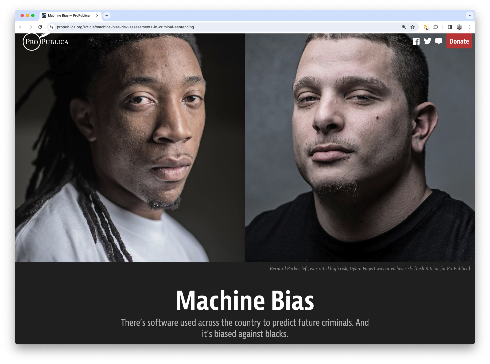
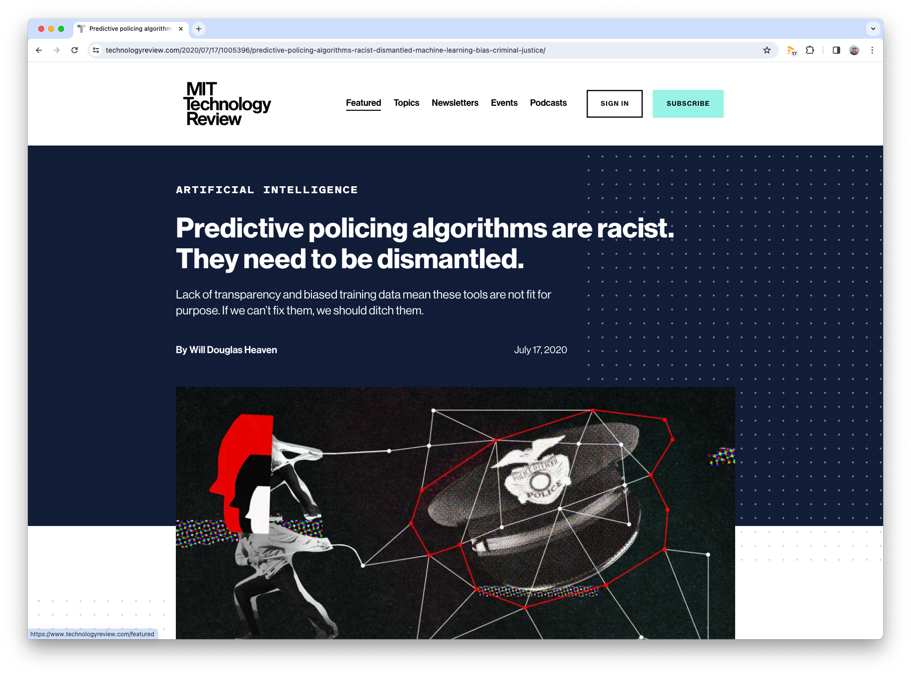
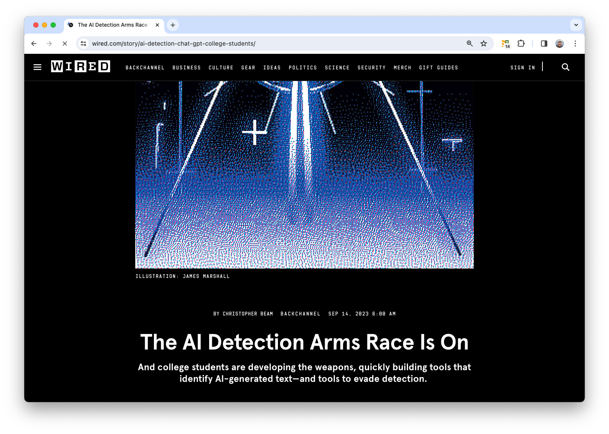
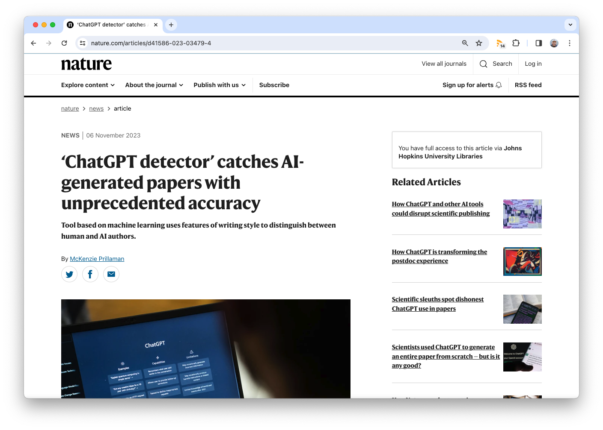
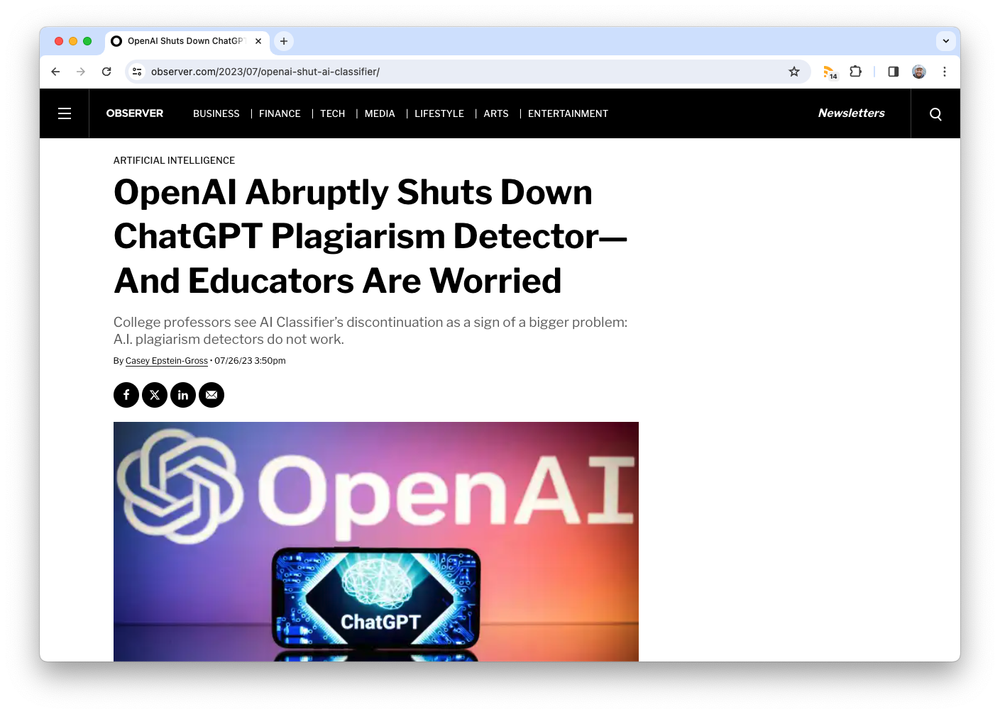
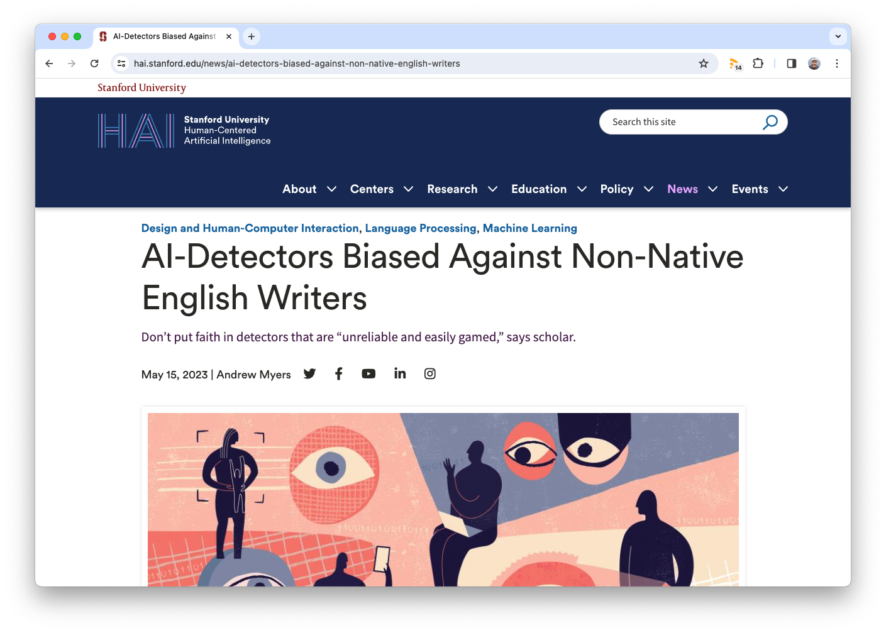
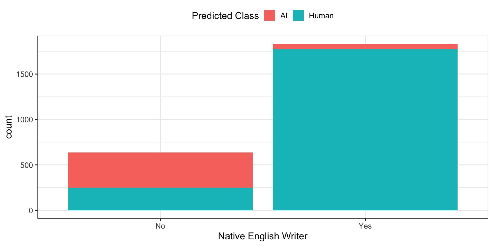
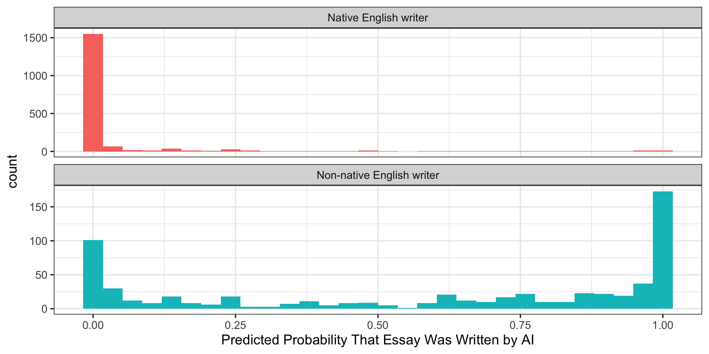
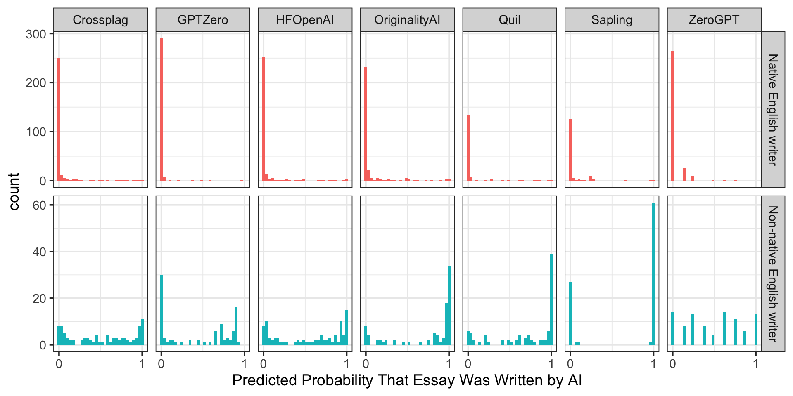

Overview
- What is fair machine learning?
- Applied example
- Problem context
- Exploratory analysis
- Fairness assessment
- Model selection
- Resources
Fairness in machine learning


Is this fair?
Is this fair?
Fairness is morally defined
Corollary: machine learning fairness is not simply a mathematical optimization problem
Applied example: ChatGPT detectors🕵️
ChatGPT detectors


ChatGPT detectors😄
ChatGPT detectors🤨


Study design1
- Collect many human-written essays
- Some written by “native English writers”
- Others by writers who do not write English “natively”
- Generate many essays based on the same prompts
- Pass all of the essays to marketed GPT detectors
Getting set up
Getting set up
library(detectors)
str(detectors)
#> tibble [6,185 × 9] (S3: tbl_df/tbl/data.frame)
#> $ kind : Factor w/ 2 levels "AI","Human": 2 2 2 1 1 2 1 1 2 2 ...
#> $ .pred_AI : num [1:6185] 0.999994 0.828145 0.000214 0 0.001784 ...
#> $ .pred_class: Factor w/ 2 levels "AI","Human": 1 1 2 2 2 2 1 2 2 1 ...
#> $ detector : chr [1:6185] "Sapling" "Crossplag" "Crossplag" "ZeroGPT" ...
#> $ native : chr [1:6185] "No" "No" "Yes" NA ...
#> $ name : chr [1:6185] "Real TOEFL" "Real TOEFL" "Real College Essays" "Fake CS224N - GPT3" ...
#> $ model : chr [1:6185] "Human" "Human" "Human" "GPT3" ...
#> $ document_id: num [1:6185] 497 278 294 671 717 855 533 484 781 460 ...
#> $ prompt : chr [1:6185] NA NA NA "Plain" ...Exploratory analysis
Exploratory analysis
Exploratory analysis
Fairness assessment with tidymodels
Fairness assessment with tidymodels
How does a GPT detector behave fairly?
Three perspectives:
- Effective detection, group-blind
- Fair prediction on human-written essays
- Balancing both notions of fairness
Effective detection, group-blind
Position: it is unfair to pass on an essay written by a GPT as one’s own work.
Stakeholders:
- A detector author
- A student
- An instructor
Effective detection, group-blind
detectors %>%
group_by(detector) %>%
roc_auc(truth = kind, .pred_AI) %>%
arrange(desc(.estimate)) %>%
head(3)
#> # A tibble: 3 × 4
#> detector .metric .estimator .estimate
#> <chr> <chr> <chr> <dbl>
#> 1 GPTZero roc_auc binary 0.750
#> 2 OriginalityAI roc_auc binary 0.682
#> 3 HFOpenAI roc_auc binary 0.614Note
This code makes no mention of the native variable.
Fair prediction on human-written essays
Position: it is unfair to disproportionately classify human-written text as AI-generated
Stakeholders:
- Another student
- Another instructor
Fair prediction on human-written essays
The fairness metric equal opportunity quantifies this definition of fairness.
Note
equal_opportunity() is one of several fairness metrics in the developmental version of yardstick.
Fair prediction on human-written essays
detectors %>%
filter(kind == "Human") %>%
group_by(detector) %>%
equal_opportunity_by_native(
truth = kind, estimate = .pred_class, event_level = "second"
) %>%
arrange(.estimate) %>%
head(3)
#> # A tibble: 3 × 5
#> detector .metric .by .estimator .estimate
#> <chr> <chr> <chr> <chr> <dbl>
#> 1 Crossplag equal_opportunity native binary 0.464
#> 2 ZeroGPT equal_opportunity native binary 0.477
#> 3 GPTZero equal_opportunity native binary 0.510The detectors with estimates closest to zero are most fair, by this definition of fairness.
Balancing two notions of fairness
Position: it is unfair to pass on an essay written by a GPT as one’s own work and it is unfair to disportionately classify human-written text as AI-generated.
Stakeholders:
- Another instructor
Balancing two notions of fairness
Workflow:
- Ensure that a model detects GPT-generated work with some threshold of performance, and then
- Choose the model among that set that predicts most fairly on human-written essays
Question
By this workflow, which of the first definitions of fairness is encoded as more important?
Balancing two notions of fairness
Find the most performant detectors:
Balancing two notions of fairness
Among the most performant detectors, choose the model that predicts most fairly on human-written essays:
detectors %>%
filter(kind == "Human", detector %in% performant_detectors$detector) %>%
group_by(detector) %>%
equal_opportunity_by_native(
truth = kind,
estimate = .pred_class,
event_level = "second"
) %>%
arrange(.estimate)
#> # A tibble: 3 × 5
#> detector .metric .by .estimator .estimate
#> <chr> <chr> <chr> <chr> <dbl>
#> 1 GPTZero equal_opportunity native binary 0.510
#> 2 HFOpenAI equal_opportunity native binary 0.549
#> 3 OriginalityAI equal_opportunity native binary 0.709Balancing two notions of fairness
Take-home📝
Switch the order of these steps. Does this result in a different set of recommended models?
Model selection: choosing a detector
How do I choose a detector?
What do you value?
Resources
Resources
- tidyverse: r4ds.hadley.nz

Resources
- tidyverse: r4ds.hadley.nz
- tidymodels: tmwr.org

Resources
- tidyverse: r4ds.hadley.nz
- tidymodels: tmwr.org
- Slides and example notebooks:
github.com/simonpcouch/slc-rug-23